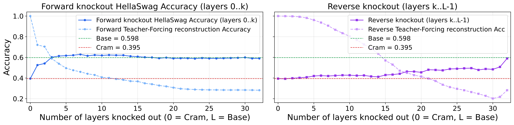

and What It Reveals

Token cramming (Kuratov et al., 2025) optimizes a single embedding $\mathbf{e}$ so a frozen LM reconstructs a long sequence via teacher forcing. Reported accuracy: ~99%.
But the missing 1% lands on early token positions. In autoregressive generation, one early miss cascades:
| Model | TF Acc. | Greedy | Err @0 |
|---|---|---|---|
| Llama-3.2-1B | 99.0% | 0.2% | 86% |
| Llama-3.2-3B | 99.0% | 0.2% | 100% |
| Llama-3.1-8B | 99.1% | 0.4% | 100% |
Instead of fixing the token budget, we fix 100% reconstruction and grow the target one token at a time:
- Start with 1 target token, warm-start from previous solution
- Extend by 1 upon perfect convergence
- Halt when perfect reconstruction fails → sharp capacity boundary
Guarantees 100% greedy generation and yields honest per-sample capacity + full optimizer trajectory.

Across model families, trajectories occupy remarkably low-dimensional subspaces:
for 99% variance
sequence length
near-orthogonal
Low dimensionality is a path property, not a solution-set property: equally-good solutions are 1.5–1.6× apart and near-orthogonal.
| Model / Type | Tokens | TF Acc | Greedy |
|---|---|---|---|
| Llama-8B / Full | 1568 | 99.96% | 40.4% |
| Llama-8B / Progr. | 1438 | 100% | 100% |
| Pythia / Full | 512 | 99.71% | 44.2% |
| Pythia / Progr. | 430 | 100% | 100% |
Progressive cramming trades <10% capacity for guaranteed perfect generation.
Solutions are 1.5× apart and near-orthogonal (diverse).
Prepending a crammed embedding drops benchmark accuracy, even with the original prefix in context:
| Model | HS Base | HS +Emb | ARC Base | ARC +Emb |
|---|---|---|---|---|
| Pythia-1.4b | 44.0% | 37.6% | 53.1% | 49.1% |
| SmolLM2-1.7B | 53.6% | 37.0% | 67.3% | 56.0% |
| Llama-3.1-8B | 61.9% | 40.8% | 63.5% | 43.3% |

Early layers are causally responsible for both reconstruction and capability collapse. Late-layer attention mass (20–60%) is a symptom, not the cause.
Consistent across Llama-3.1-8B, Pythia-1.4B, and SmolLM2-1.7B.
Embedding attracts 20–60% attention mass (sink), but masking late layers has negligible causal effect.
Truncate models to first $N$ layers, finetune, then run progressive cramming. Capacity rises monotonically with both depth and width:
| Model | N=1 | N=2 | N=4 | N=8 | Full |
|---|---|---|---|---|---|
| SmolLM2-1.7B | 50 | 241 | 404 | 455 | 335 |
| SmolLM3-3B | 20 | 39 | 114 | 300 | — |
| Qwen3-4B | 79 | 147 | 192 | 421 | 512 |
| Qwen3-8B | 119 | 180 | 304 | 625 | 774 |
| Llama-3.1-8B | 97 | 184 | 400 | — | 1438 |
Depth and width compound and partially substitute: a wide shallow model can partly compensate for missing depth.
| Model | Tokens | Info Gain | PCA 99% |
|---|---|---|---|
| Llama-3.1-8B | 1438 | 4391 | 83 |
| Pythia-1.4b | 430 | 1639 | 50 |
| SmolLM2-1.7B | 335 | 1208 | 33 |
| Gemma-3-4B | 214 | 783 | 31 |
Gemma’s logit softcapping limits information gain. Low-dim projection boosts capacity (up to 3× for SmolLM2).
- Progressive cramming — 100% generation guarantee
- Low-dim trajectories — 30–100 PCA components for 99% variance
- Downstream collapse — HellaSwag/ARC drop, MMLU → 0%
- Causal analysis — early layers drive collapse